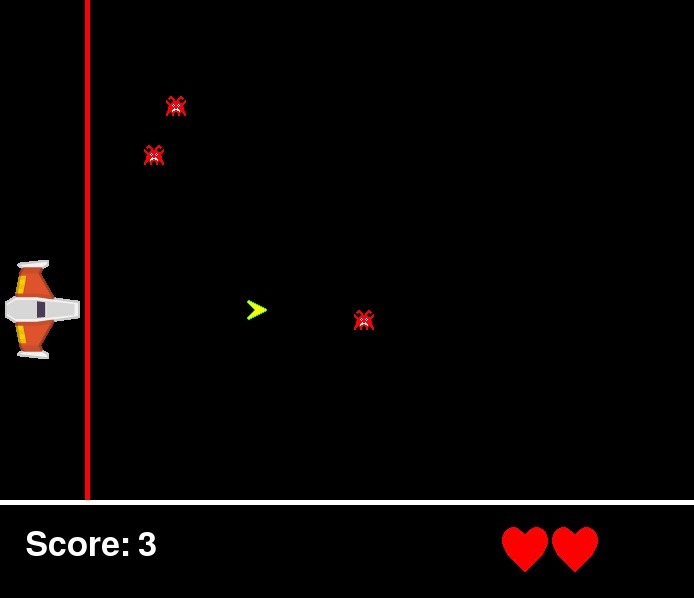
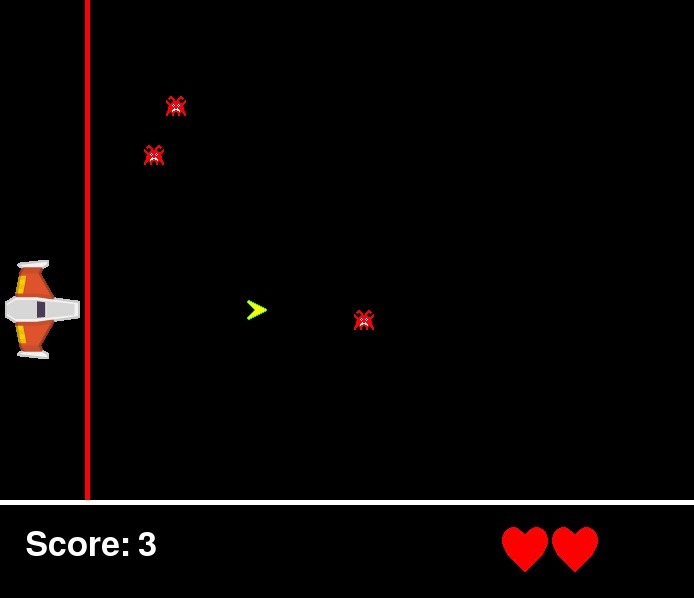

{{ Voici ci-dessous des projets faits par mes étudiants de l'année passée, cliquez pour voir en grand ! |Below, here are few projects my students made previous year, click to see the picture full screen! }}
{{ Les élèves ont de 14 à 16 ans, ils débutent l'année avec zéro connaissances d'informatique, et finissent par coder ces projets après 16h de programmation avec moi ! Le rythme est de 1h par semaine, les projets montrés sont les plus développés du groupe, ces étudiants ont également travaillé de leur plein gré à la maison pour améliorer leur projet au cours de l'année. |The students are from 14 to 16 years old, they begin the year with zero knowledge of computing, and finish being able to code those projects after 16h of programming with me! The rate is 1 hour per week, the projets shown are the most developped ones of the group, those include some work at home, those students were naturally motivated to work at home. }}
{{ Le code source de ces projets est disponible ici : | The source code of those projects is available here:}} Michal [zip], Arnaud [zip], {{ téléchargez le zip et installez python et pygame pour y jouer ! | download the zip and install python and pygame to play! }}
 

{kind=link}
{kind=link}